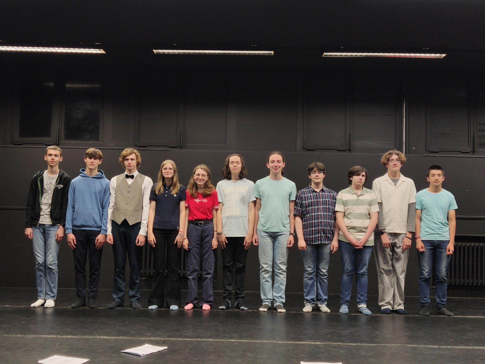

Théâtre, "Sur scène, dans la salle"
Mon année de Terminale en Theâtre
Ceci est mon carnet de bord du Théàtre lors de cette année de Terminale en 2024-2025, il va être mis a jour au fur et à mesure de l'année et surtout il va me servir de "petit" carnet auquel je vais rajouter du contenu de temps en temps (enfin quand il le faut). Moi Samuel Haudry, en classe de TSTD2 s'est engagé de le faire sur plusieurs plateforme; papier, diaporama etc.. Mais c'est celui ci que je vais privilégier en premier! Alors allons-y!
J'ai fais en sorte que les représentations soit chronologique, c'est-à-dire du plus récent au plus lointain! La première représentation à l'heure pù j'écris cela sera... Les Sea Girls!! Et j'ai hâte car, le Théâtre c'est pas mal du tout! Eh bien.. C'est tout pour cette MAGNIFIQUE page avec ce beau sol/tapis de théâtre en fond qui.. me fait mal aux yeux quand je le regarde. Enfin presque.. Regardez, c'est nous! Enfin pas vous puisque vous êtes derrière la photo mais bon.. C'est quand même nous!
